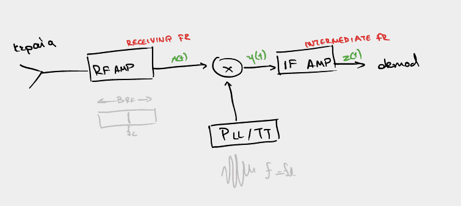

Διάλεξη 7: Πολυπλεξία και Υπερετερόδυνος Δέκτης.
Table of Contents
Πολυπλεξία
Θα ήταν καλό, όποιος βλέπει αυτές τις σημειώσεις, να ανατρέξει και στην σελίδα 233 των Καραγιαννίδη, Παππή, καθώς το περιεχόμενο αυτής της ενότητας, αν και όπως αναφέρθηκε στην διάλεξη, φαίνεται να μην καλύπτει τα ίδια με το βιβλίο.
Με τον όρο πολυπλεξία αναφερόμαστε στην διαδικασία κατα την οποία, πάνω από ένα κοινόχρηστο μέσο, μοιράζουμε ορισμένες ιδιότητες μεταξύ διαφόρων μηνυμάτων, ούτως ώστε να μπορούν να μεταφερθούν όλα επί εκείνου, φαινομενικά ταυτόχρονα.
Υπάρχουν τρεις κυρίαρχες τεχνικές επί τούτου:
- FDMA (Freq Division Multiple Access): Μοιράζουμε το διαθέσιμο φάσμα συχνοτήτων σε \(n\) κομμάτια (όπου \(n\) ας πούμε πως είναι τα μηνύματα που θέλουμε να στείλουμε - προφανώς αυτό είναι ιδανική περίπτωση, καθώς το διαθέσιμο φάσμα συχνοτήτων είναι περιορισμένο), ούτως ώστε αυτά τα \(n\) κομμάτια πλάτους \(W\) να μην επικαλύπτονται μεταξύ τους. Έτσι, κατά την διαμόρφωση των μηνυμάτων, φροντίζουμε, με την κατάλληλη χρήση φέροντων, να αντιστοιχίσουμε τα μηνύματα με τα frequency slots που έχουμε δημιουργήσει. Παράδειγμα FDMA, προφανώς, αποτελούν οι ραδιοφωνικοί σταθμοί.
- TDMA (Time Division Multiple Access): Αντί να μοιράζουμε το φάσμα συχνοτήτων, μοιράζουμε τον χρόνο κατα τον οποίο μεταδίδεται το κάθε μήνυμα. Εύκολα αυτό μπορεί να οπτικοποιηθεί σκεπτόμενοι πως το access point μπορεί να εξυπηρετεί ταυτόχρονα τόσες συσκευές
- CDMA (Code Division Multiple Access - Δεν καλύφθηκε απλή αναφορά)
Οι δύο τελευταίες τεχνολογίες περιορίζονται, αποκλειστικά, σε ψηφιακά συστήματα.
Πολυπλεξία στην συχνότητα
Γενικά κινούμαστε μεταξύ των
- AM: 535-1605KHz
- FM: 88-108MHz
- Μετά τα 108MHz -> ILS (instrument landing system)
Σε καθ’ένα από αυτά τα διαστήματα, έχουμε μικρότερα διαστήματα…
Figure 1: Photo retrieved from the U.S. Department of Transportation on
Δέκτες
Στις προηγούμενες διαλέξεις έχουμε δει το κομμάτι των αποδιαμορφωτών και διαμορφωτών, αλλά δεν είναι όλες οι τηλεπικοινωνίες. Αγνοήσαμε ένα πολύ σημαντικό κομμάτι αυτό του πομπού και του δέκτη, μέρος του οποίου αποτελεί το αντικείμενο της συγκεκριμένης διάλεξης:
Ομόδυνος δέκτης
Αποτελεί, ιστορικά, την πρώτη μορφή δέκτη, η οποία παραγκωνίσθηκε από τον υπερετερόδυνο δέκτη. Έχει αρχίσει να χρησιμοποιείται ευρέως ξανά, με την άνοδο του software radio. Είναι εδώ καθαρά εγκυκλοπαιδικά, έμφαση αποκλειστικά στον SHTR.
- Αλλιώς λέγεται και zero-if receiver, direct-conversion receiver
Figure 2: Μια πολύ απλουστευμένη μορφή του ομόδυνου δέκτη, με ενισχυτή και φίλτρα narrow-band
Αυτά που ίσχυαν παλιά είναι:
- Δουλεύει σε μόνο μία συχνότητα, με πολύ εξειδικευμένο narrow-band φίλτρο και ενισχυτή (Αυτό μπορεί να αναιρεθεί με την χρήση εν σειρά συντονισμένων κυκλωμάτων(;)).
- Δυσκολία προσδιορισμού/κατασκευής του φίλτρου ωστε να προσεγγιστεί η επιθυμητή συνάρτηση.
- Στις αρχές τουλάχιστον - παραμένει όμως, συγκριτικά με τα φίλτρα και τους ενισχυτές που δουλεύουν σε πιο χαμηλές συχνότητες (σαν αυτούς που χρησιμοποιούνται στο HSI SHTR), πιο ακριβή κατασκευή.
- Αντικαταστάθηκε από τον υπερετερόδυνο δέκτη
Υπερετερόδυνος Δέκτης:
Ο τύπος δέκτη που μας ενδιαφέρει (SHTR: Super Heterodyne Receiver), λειτουργεί μετατοπίζοντας το σήμα εισόδου σε μία ενδιάμεση συχνότητα \(f_{if}\), συνήθως χαμηλή για ευκολότερη κατασκευή φίλτρων και μεγαλύτερη αποδοτικότητα.
Στην αρχή το σήμα εισόδου φιλτράρεται μέσα από τον RF ενισχυτή, επιτρέποντας ένα σχετικά γενναιόδωρο φάσμα γύρω από την \(f_c\). Το σήμα σε αυτό το στάδιο πολλαπλασιάζεται με την έξοδο τοπικού ταλαντωτή ώστε να προκύψει σήμα στην συχνότητα \(f_{if}\) (παράλληλα προκύπτει σήμα σε διαφορετική συχνότητα το οποίο όμως εύκολα φιλτράρεται από τον IF ενισχυτή μας). Τελικά προκύπτει το σήμα σε κατάλληλη μορφή ώστε να δοθεί σαν είσοδος σε αποδιαμορφωτή.
Βάση της σχέσης \(f_c,f_{if}\) αλλά και της μορφής της \(f_l\), ο υπερετερόδυνος δείκτης λέμε πως πραγματοποιεί άνω ή κάτω μετατροπή και έγχυση υψηλής ή χαμηλής ζώνης αντίστοιχα.

Figure 3: Διάταξη υπερετερόδυνου δέκτη, περιλαμβάνοντας όλες τις κρίσιμες έννοιες
Καταλαβαίνοντας την μορφή του σήματος σε κάθε βήμα
Ό,τι σημειώνεται για ΑΜ προφανώς ισχύει και για FM, αν και ενδεχομένως με κάποιες αλλαγές.
Δοθέντος ενός σήματος πληροφορίας \(m(t)\), διαμορφωμένου κατά DSBAM-TC, το οποίο έρχεται σαν είσοδος από τον RF ενισχυτή μας:
\begin{equation} \label{eq:1} x(t) = [A_c + m(t)]\cos{2\pi f_ct} \end{equation}Πολλαπλασιάζεται με το σήμα του τοπικού ταλαντωτή (στην πραγματικότητα εδώ, για χάρη απλότητας, φαίνεται μόνο η μία από τις δύο περιπτώσεις. Αναλυτικότερα δες LSI,HSI, \(\ref{eq:4}\)):
\begin{align} \label{eq:2} y(t) &= [A_c + m(t)]\cos{2\pi f_ct}\cos{2\pi f_lt}\\ &= [A_c + m(t)][\cos{2\pi (f_c+f_l)t}+\cos{2\pi (f_c-f_l)t}] \end{align}Σε αυτή την φάση ο όρος \(\cos{2\pi (f_c-f_l)t}\) μπορούμε να θεωρήσουμε πως είναι της μορφής \(\cos{2\pi f_{if}t}\), επομένως είναι της κατάλληλης μορφής για να επιτραπεί από το IF φίλτρο:
\begin{equation} \label{eq:3} z(t) = [A_c + m(t)]cos{2\pi f_{if}t} \end{equation}Up and Down Conversion
Η άνω ή κάτω μετατροπή αποφασίζεται βάση της σχέσης μεταξύ των \(f_{if},f_c\).
Ειδικότερα αν \(f_{if}
Καθώς ο τελικός ενισχυτής και το φίλτρο ακριβείας είναι στην συχνότητα \(f_{if}\),
και γνωρίζουμε πως η αποδοτικότητα αυτών των εξαρτημάτων είναι μεγαλύτερη στις
χαμηλές συχνότητες, συνήθως προτιμάται η κάτω μετατροπή.
Low and High Side Injection
Ένας εύκολος τρόπος να θυμάσαι up/down conversion και LSI/HSI:
- Το up/down conversion σχετίζεται με το αν η ενδιάμεση συχνότητα \(f_{if}\) είναι πάνω ή κάτω από την συχνότητα διαμόρφωσης
- Η LSI/HSI σχετίζεται με το αν η συχνότητα του ταλαντωτή είναι πάνω ή κάτω από την συχνότητα διαμόρφωσης
Έγχυση υψηλής ή χαμηλής ζώνης έχουμε όταν \(f_l= f_c+f_{if}\) ή \(f_l= f_c-f_{if}\) αντίστοιχα. Σε αυτές τις περιπτώσεις, επομένως, η εξίσωση \(\eqref{eq:2}\) γίνεται:
\begin{equation} \label{eq:4} y(t) = \begin{cases} [A_c + m(t)][\cos{2\pi f_{if}t}+\cos{2\pi (2f_c+f_{if})t}] &\text{HSI}\\ [A_c + m(t)][\cos{2\pi f_{if}t}+\cos{2\pi (2f_c-f_{if})t}] &\text{LSI} \end{cases} \end{equation}Εικονικό σήμα
Αν το φίλτρο RF δεν είναι ρυθμισμένο κατάλληλα, και περάσουν συχνότητες πέραν του επιθυμητού εύρους ( δηλαδή γύρω από την \(f_c\) που θέλουμε) μπορεί στο βήμα της \(\eqref{eq:2}\) να εμφανιστούν παρεμβολές στην συχνότητα \(f_{if}\) με αποτέλεσμα να έχουμε παραμόρφωση του μηνύματος
Εύκολο παράδειγμα για αυτό είναι αν περάσει η συχνότητα \(2f_{if}+f_c\) με HSI:
\begin{equation} \label{eq:5} x(t) = [A_c+m_1(t)]\cos{2\pi f_ct} + m_2(t)\cos{2\pi (f_c+2f_{if})t} \end{equation}τότε, μετά τον πολλαπλασιασμό των σημάτων
\begin{equation} \label{eq:6} y(t) = [A_c + m_1(t)][\cos{2\pi f_{if}t}+\cos{2\pi (2f_c+f_{if})t}] + m_{2}(t)[\cos{2\pi f_{if}t}+\cos{2\pi (2f_c+3f_{if})t}] \end{equation}όπου φαίνεται πως, με την κατάλληλη παραγοντοποίηση εμφανίζεται ο όρος \(\cos{2\pi f_{if}t}[A_c+m_1(t)+m_2(t)]\), που σημαίνει πως έχουμε παραμόρφωση του σήματος πληροφορίας.
Η ίδια ανάλυση μπορεί να γίνει και για LSI. Λύνεται με ρύθμιση του εύρους του \(B_{RF}\) ούτως ώστε να είναι αρκετά μικρό και να μην πιάνει αυτές τις συχνότητες:
\begin{equation} \label{eq:7} f_c + \frac{B_{RF}}{2} < 2f_{if}+f_c\iff \cdots \iff B_{RF} < 4f_{if} \end{equation}| Προβληματική συχνότητα | Άνω όριο \(B_{RF}\) | |
| HSI | \(f_c+2f_i\) | \(4f_{if}\) |
| LSI | \(abs[f_c-2f_i]\) | \(4abs[f_{if}-f_c]\) |